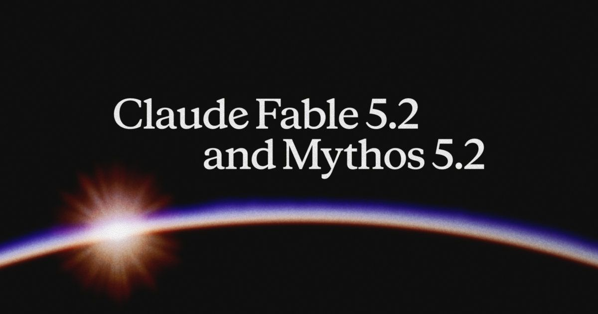
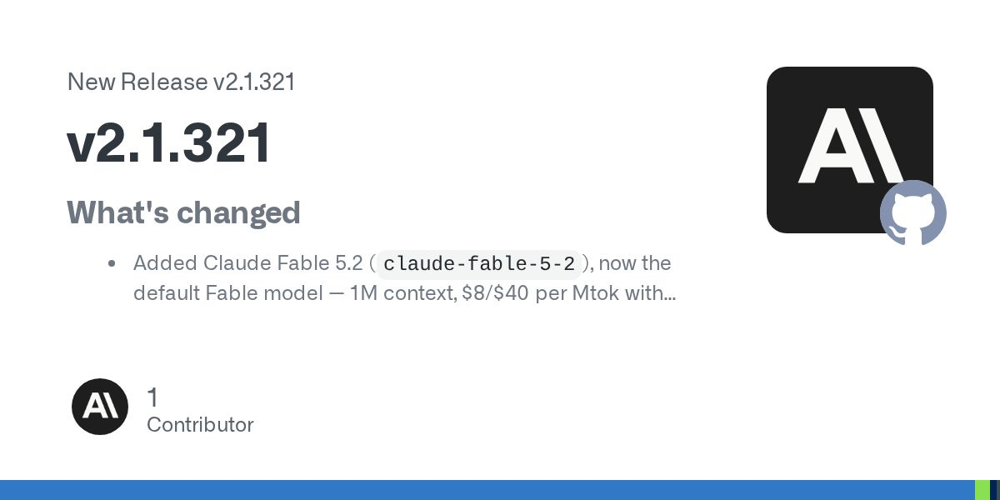

Claude Fable 5.2 / Mythos 5.2 发布。

原文正文要点
两者是同一底层模型，Fable 带网络安全与生物安全防护、面向所有用户，Mythos 需通过验证计划申请。可选快速模式提速最多 2.5 倍，价格为 $16/$80。本周符合条件的付费订阅用户可获得额外 Fable 用量（1–3 次重置，Pro 与 Team 标准席位最多可用周额度的 50%）。官方公告（11-09）｜Hacker News 讨论（859 分）
时间窗口：11-09 08:00 到 11-10 08:20（台北时间）。已与前 7 期去重，每条均核对正文与日期。

两者是同一底层模型，Fable 带网络安全与生物安全防护、面向所有用户，Mythos 需通过验证计划申请。可选快速模式提速最多 2.5 倍，价格为 $16/$80。本周符合条件的付费订阅用户可获得额外 Fable 用量（1–3 次重置，Pro 与 Team 标准席位最多可用周额度的 50%）。官方公告（11-09）｜Hacker News 讨论（859 分）
应用访问、API 调用全部关停，通过它发布到微信渠道的智能体已无法对话；用户须在 2027-01-09 前申请数据导出，未用完的余额可在腾讯云申请退款。AI工具集快讯（11-09，原始来源 IT之家）
OpenAI（11-10 03:00）

默认 Fable 模型改为 Fable 5.2（1M 上下文）；修复 MCP OAuth 在重定向时把刷新令牌等密钥发往其他主机、只读 Bash 命令在沙盒外运行且不弹确认等问题。Release（11-10 03:22）
新增「协作」空间，数字员工可关联多个钉钉群、文档和 AI 表格，汇总进展、创建待办；「自动任务」支持按指定人消息、群内 @、审批任务触发；手机、电脑、网页三端同步，任务在云端执行。文章为厂商供稿。量子位（11-09 16:34）
字节 Seed 团队的图像创作模型，支持连续修改 100 轮且保持非编辑区不变，可原生生成 RGBA 透明素材，已在即梦、豆包、火山方舟等平台上线。AI工具集快讯（11-09）
未公开出处与参数，活动期间对个人版用户限时免费，社区反馈速度较快。AI工具集快讯（11-09）
作者为小区山姆拼单群用 WorkBuddy 做的小程序，群友自行认领份数，大份商品可拆分，并计算每人应付金额，解决翻聊天记录和手动算账的问题。V2EX（11-09 19:26）
作者为一家工厂整理 2 万多份散落在 6 个地方的图纸和工艺资料，认为技术只占三成，难点在于确认版本、权限过滤和持续维护；所有回答都带原文出处，宁可回答「没找到」。电鸭（11-09 18:07）
为文旅赛事微信小程序（AI 伴行、AI 创作、社区、商城等模块）梳理需求，交付 Figma 原型、PRD、业务流程图与交互说明；试做不适配按 300 元/有效工作日结算，适配则整包合作，一期节点为 12 月 3 日。电鸭（11-10 08:17）
一款 AI 沉浸式粉丝体验应用招小程序 UX/UI、动效与组件规范设计，要求 3 年以上 C 端经验并熟练使用 Figma；长期合作，可按里程碑结算，帖内未写预算。电鸭（11-09 17:29）
作者用 AI 监控 Reddit、筛选小需求并整理成每日邮件，自述半个月有 30 人订阅，正在征集改进意见。电鸭（11-09 12:32）


r/ClaudeAI 返回空内容；Google AI Blog、Ben's Bites 窗口内无新稿；Cursor Changelog 最新为 11-06；Hacker News 搜索接口一次返回 400，改用首页接口核验。